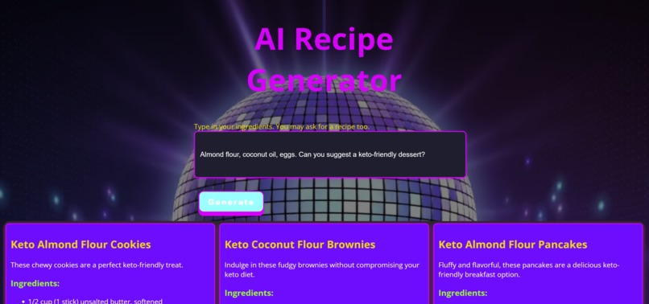
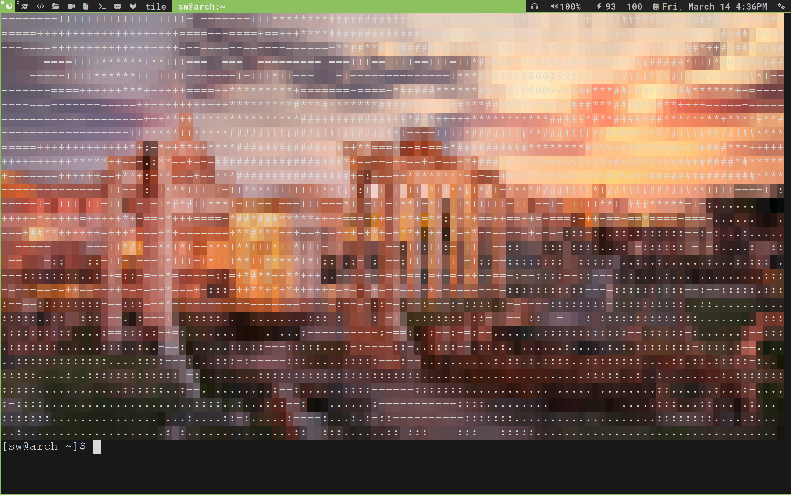
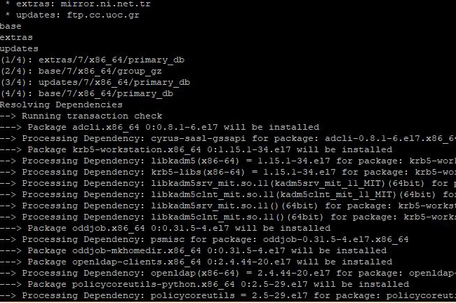

About Me
Hello! I'm a freshman Computer Science student with a passion for technology and system administration. My journey began with building PCs and exploring Linux systems, which evolved into a deep understanding of system architecture and infrastructure management. I'm particularly interested in open-source software, cybersecurity, and enterprise system administration. With seven years of Linux experience, on servers and on my daily driver, across various distributions, I've worked on server deployment, network configuration, and security hardening. Currently, I'm expanding my knowledge in Rust systems programming, AI integration, and advanced infrastructure automation using tools like Terraform and Docker.
Skills
Programming Languages
- Python
- JavaScript
- Java
- Rust
- Bash
Web Technologies
- HTML5
- CSS3/Sass
- React
- Node.js
- Flask
System Administration
- Linux (Multiple Distributions)
- Apache Server
- System Security
- Docker
- Networking
Tools & Platforms
- Git/GitHub
- Android Development
- SQL
- Terraform
- AI Integration
Projects
AI Recipe Generator - Hackathon Project
An innovative AI-powered recipe generator that transforms available ingredients into creative, personalized recipes. Built during a hackathon, this project combines AI technology with practical kitchen solutions.
- AI-powered recipe generation based on available ingredients
- Personalized recipe recommendations with allergen info and calorie counts
- Recipe storage and management using MongoDB
- User-friendly interface for seamless recipe discovery
Greetings - ASCII Art Generator
A cross-platform Python application that fetches Bing's daily wallpaper and converts it into colorful ASCII art. Features include:
- Cross-platform compatibility (Windows, Mac, Linux)
- 24-bit and 8-bit color terminal support
- Shell integration for startup customization
- Configurable ASCII conversion parameters
Linux Server Administration
Built and maintained four dedicated servers running various services including Apache and game servers. Implemented comprehensive security measures including firewall configuration, user management, and secure authentication systems.
Certifications
LFS101: Introduction to Linux
Proficient in navigating and managing configurations across major Linux distributions, utilizing both graphical interface and command line operations effectively. Demonstrated expertise in system administration fundamentals and security practices.
Contact Me
I'm always eager to collaborate on interesting projects and contribute to meaningful initiatives. Whether you're interested in my work or have opportunities to discuss, feel free to reach out!